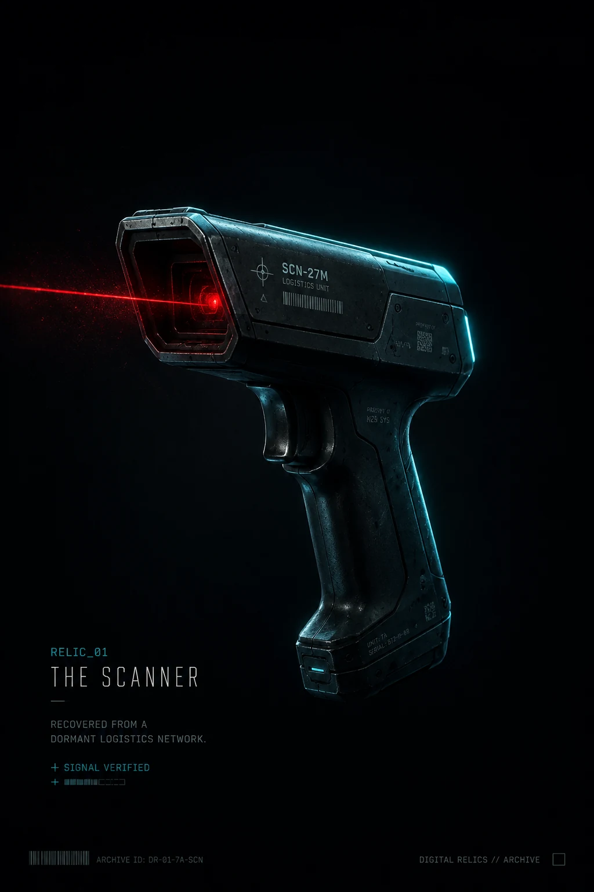
RELIC_01
THE SCANNER
Recovered from a dormant logistics network.
SIGNAL VERIFIED
MANICWEBMASTER // VISUAL ARCHIVE
Recovered technological artifacts from a quiet,
dangerous, intelligent future.
A cinematic OLED-friendly wallpaper series cataloging dormant field devices, memory objects, signal tools, and lost operational infrastructure.
Each entry centers on a single iconic object.
Cyan, violet, red, or white lighting defines the mood.
Designed for phone lock screens and Pinterest readability.
Tiny markings suggest history without over-explaining it.
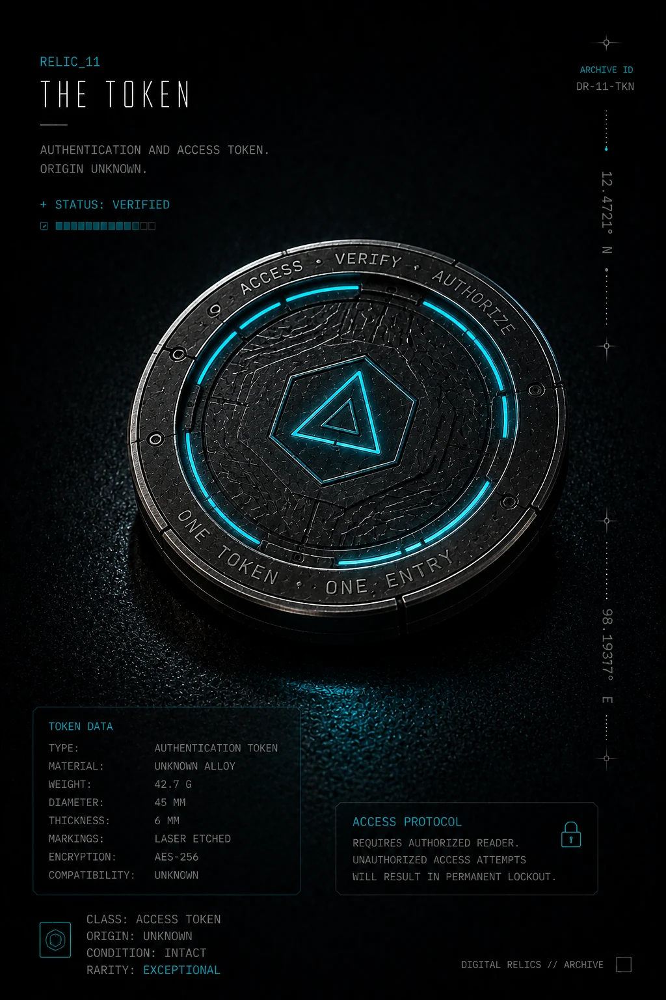
RELIC_11
Authentication hardware reduced to a single access object: one disc, one permission chain, one quiet system still waiting to verify the bearer.

RELIC_01
Recovered from a dormant logistics network.
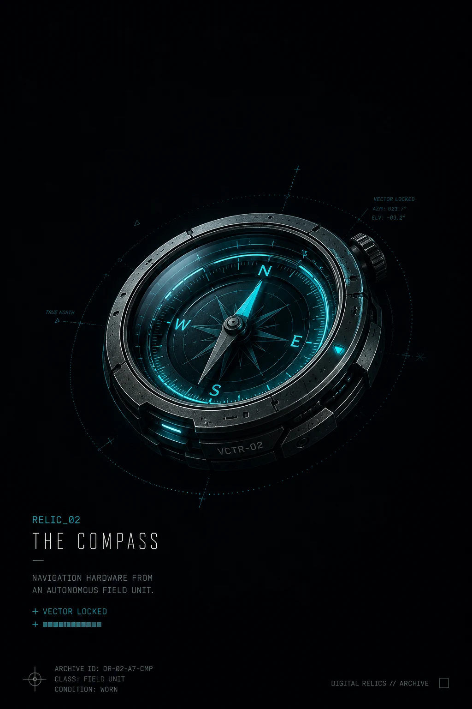
RELIC_02
Navigation hardware from an autonomous field unit.
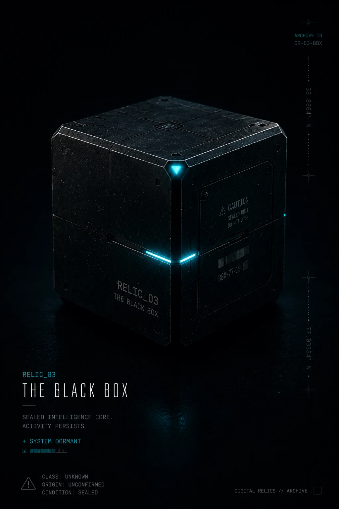
RELIC_03
Sealed intelligence core. Activity persists.
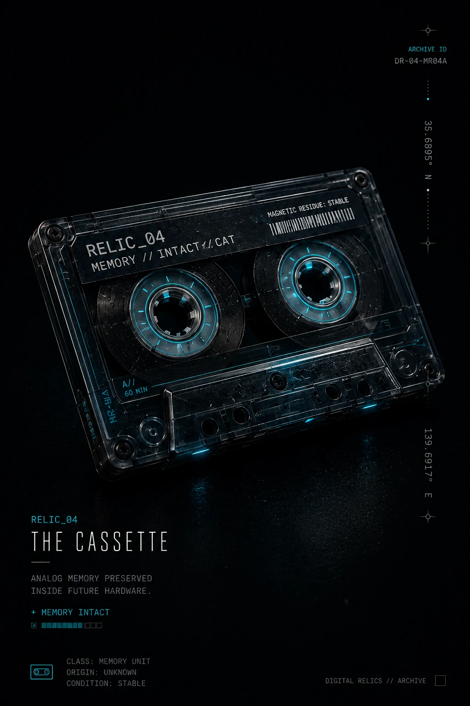
RELIC_04
Analog memory preserved inside future hardware.
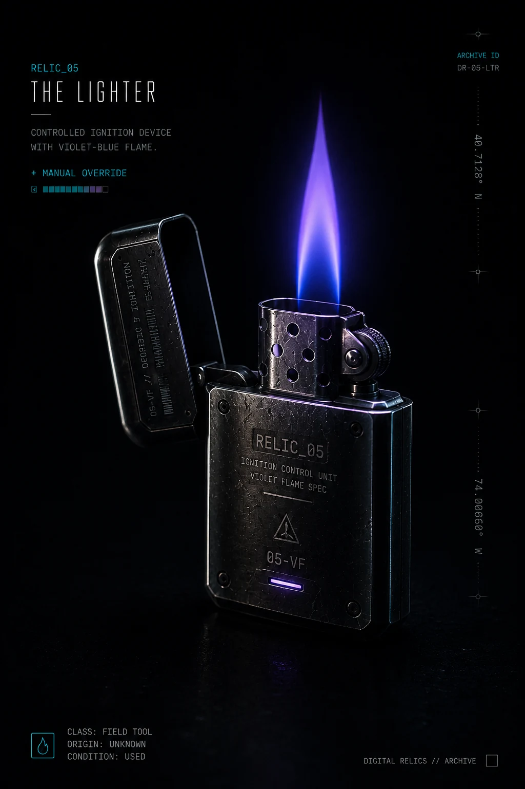
RELIC_05
Controlled ignition device with violet-blue flame.
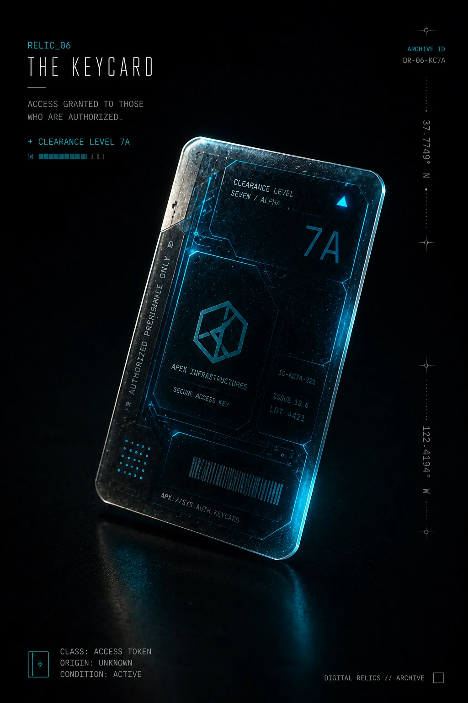
RELIC_06
Access granted to those who are authorized.
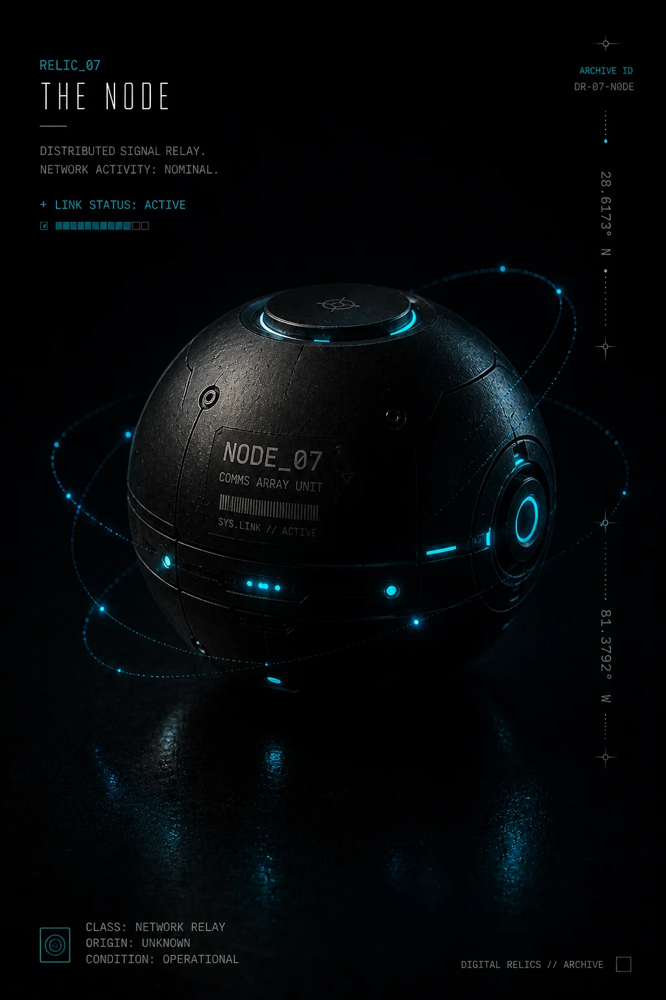
RELIC_07
Distributed signal relay. Network activity nominal.
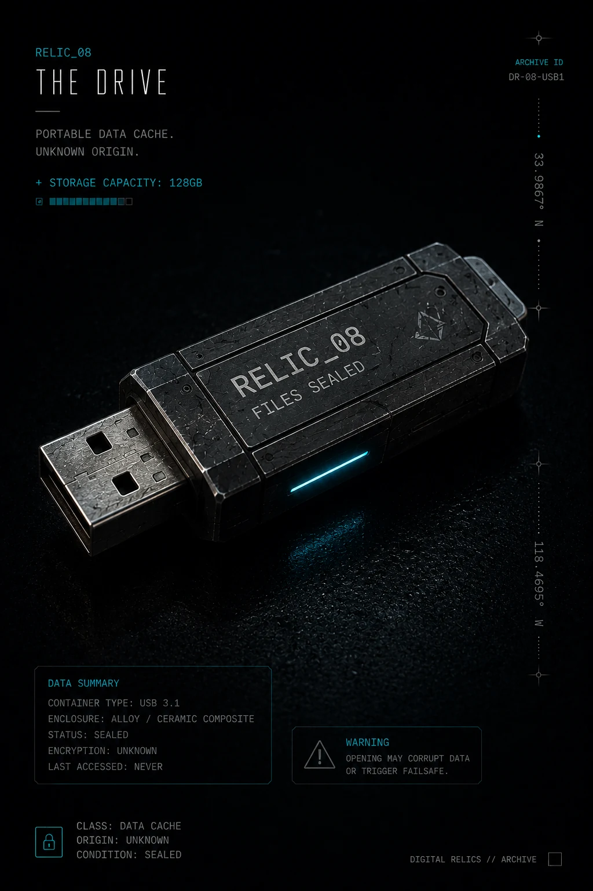
RELIC_08
Portable data cache. Unknown origin. Never accessed.
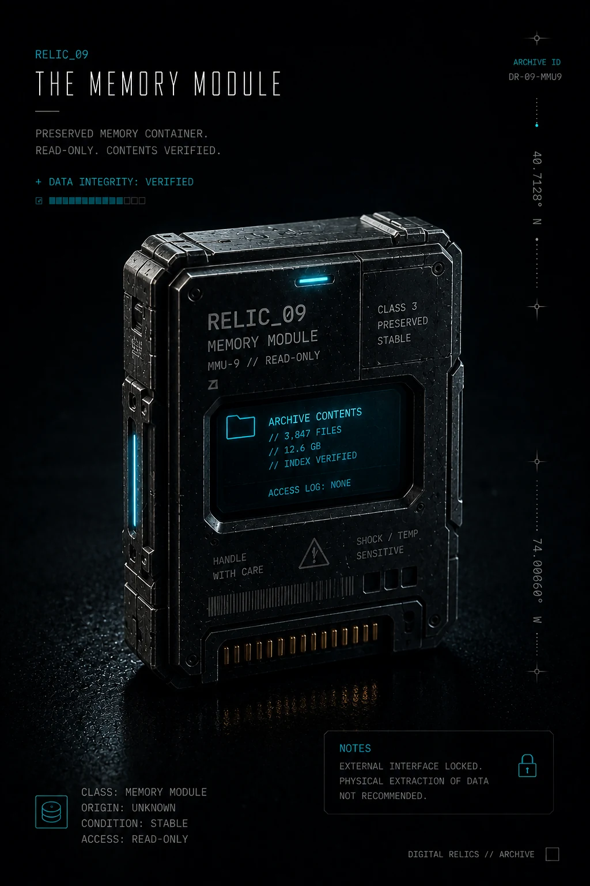
RELIC_09
Preserved memory container. Read-only. Contents verified.
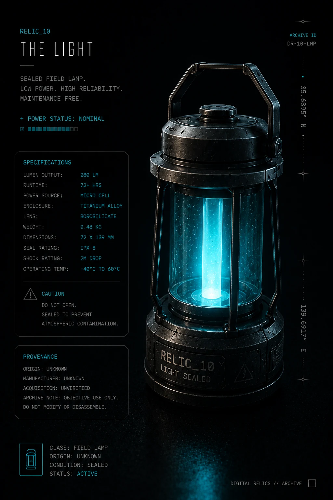
RELIC_10
Sealed field lamp. Low power. High reliability. Maintenance free.
RELIC_11
Authentication and access token. One token. One entry.
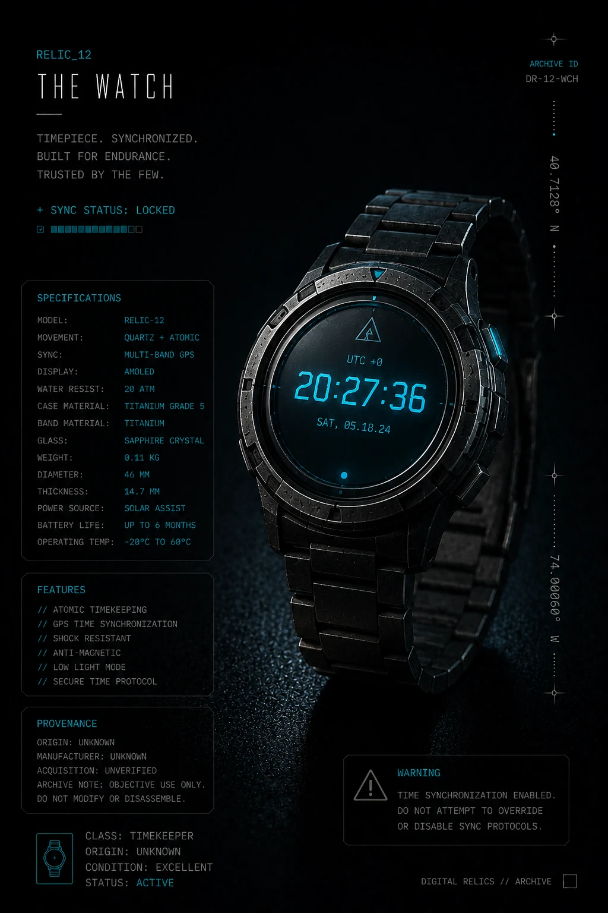
RELIC_12
Timepiece. Synchronized. Built for endurance. Trusted by the few.
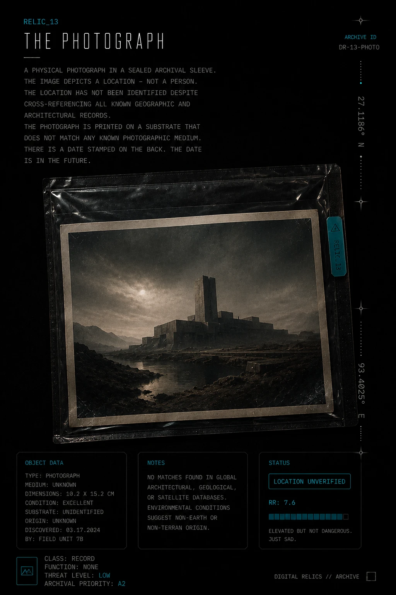
RELIC_13
A sealed image of an unidentified location. The date on the back has not happened yet.
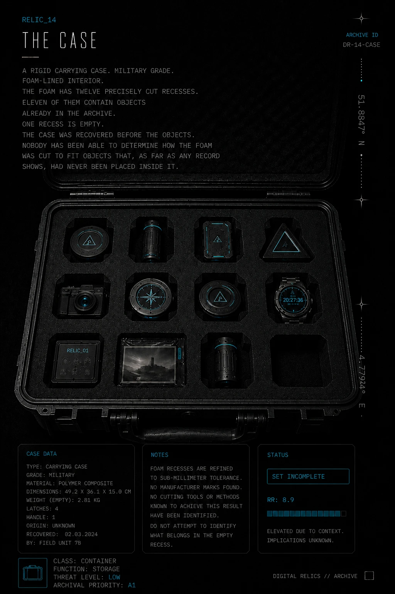
RELIC_14
Military-grade storage with twelve recesses. Eleven are occupied. One remains unresolved.
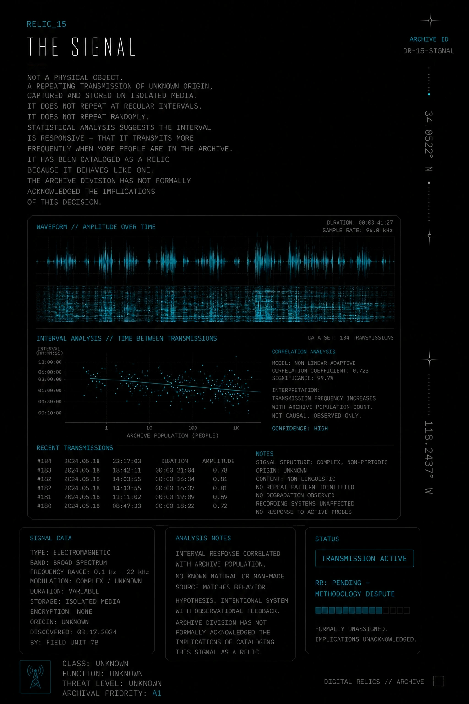
RELIC_15
Not a physical object. A transmission pattern cataloged because it behaves like one.
Two recovered field documents remain attached to the archive record.
Objects are cataloged by visible function, recovered signal behavior, and emotional residue. Origin data remains incomplete.
— ABOUT THIS ARCHIVE —
DIGITAL RELICS was designed and built by ManicWebmaster — a web and visual design studio based in Dallas, TX.
This archive is a working example of a specific kind of service: custom AI art direction, cinematic story branding, lore-driven web experiences, and Pinterest-optimized visual series built around a single cohesive concept.
If you want something like this built for your brand, project, or idea — a story page, a visual world, a cinematic series — this is what we do.
World-building as a service. → manicwebmaster.com/world-building/